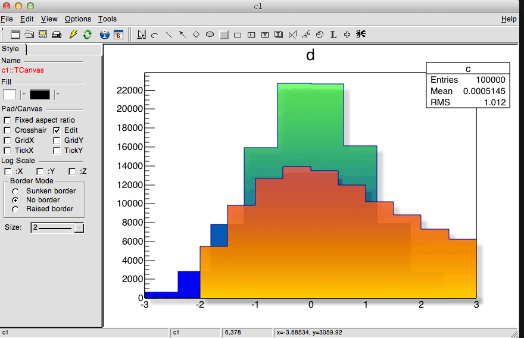

2D Graphics Libraries
TPDF
-
The table of content entries were not correct if there was and extra option
before "Title:".
-
After a title was once set, this title will be used for all following
additions to the PDF file, instead of "Page ###".
-
Better sizes matching with the screen output for markers 6 and 7 (dots).
-
Implement the transparency in PDF files. To make a graphics object transparent
it is enough to set its color to a transparent one. The color transparency
is defined via its alpha component. The alpha value varies from 0. to 1.
0. makes an object fully transparent, and 1. makes it fully opaque. To set the
alpha value of an existing color it is enough to do:
TColor *col26 = gROOT->GetColor(26);
col26->SetAlpha(0.01);
A new color can be created transparent the following way:
Int_t ci = 1756;
TColor *color = new TColor(ci, 0.1, 0.2, 0.3, 0.5); // alpha = 0.5
An example of tranparency usage with parallel coordinates can be found
in $ROOTSYS/tutorials/tree/parallelcoordtrans.C
TSVG
-
Implement the transparency in SVG files (cf TPDF).
TLegend
-
The option E, to draw the error bar on a legend entry, does not need
anymore the option L to be active. It is now possible to draw the error
bar only using the option E alone. The combination of the options E and L
still works as before.
-
The text attributes were not properly initialized by the default
constructor.
TLatex
TPad
-
New method DivideSquare a canvas in to n sub-pads. The number of sub-pads
along the X and Y axis are computed according to the square root of n.
Example:
void divsquare(int w, int h, int n)
{
TCanvas *c = new TCanvas ("c","c",0,0,w,h);
c->DivideSquare(n);
for (int i=1; i<=n; i++) {
c->cd(i);
gPad->DrawFrame(0,0,1,1);
}
}
- TPad::Print always use TImageDump to print gif, png and jpeg files, in
interactive and batch mode (previously it was used in the batch case only).
This allows to generate output transparent colors in these formats even in
interactive mode. The generation of gif, png and jpeg files from the
graphics window in interactive mode is kept for OpenGL canvases.
TGaxis and TAxis
- The time axis behavior should now be correct along time zone and summer
saving time. A fix has been done with the of Philippe Gras (CEA Saclay.
IRFU/SEDI) and Julian Sitarek (IFAE). Time axis transported from a time
zone to an other in a ROOT file are correct too. A new example test have
been introduced to test the time axis (timeonaxis3.C)
New graphical back-end for MacOSX
TGCocoa/TGQuartz classes are the implementation of TVirtualX based on Cocoa and Quartz 2D.
They let to use ROOT's GUI and graphics on MacOS X without installing X11.app and also give an access to Apple's native
graphics and GUI frameworks. Window management, event loop, event dispatching, etc. are implemented on top of Cocoa.
Graphics (GUI rendering and non-GUI) is done by Quartz 2D (Core Grapchis).
An example of a TCanvas with a THStack object, transparency, anti-aliasing, gradient fill, shadows:

ROOT must be configured with --enable-cocoa parameter to use Cocoa back-end instead of X11 version.
Please note, this is still a work in progress.